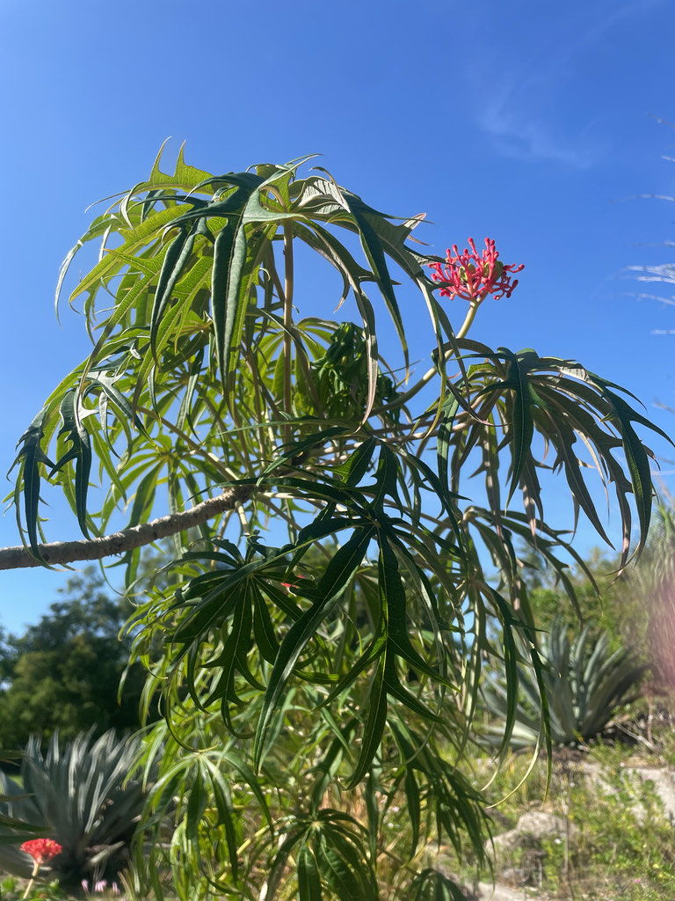

- The deeply dissected leaves and coral-red flowers create an unusual texture in the tropical garden — fine-cut foliage on a shrub that otherwise has a bold tropical presence.
- A member of Euphorbiaceae — the spurge family — same family as the Copperleaf, Chenille Plant, and Pencil Tree in the park collection. The milky sap is the family signature.
- The coral-red tubular flowers attract hummingbirds. The distinctive coral-red star-shaped fruit capsules that follow are nearly as ornamental as the flowers.
- All parts toxic — the euphorbiacea sap and seed compounds are the concern.
Non-native. Native to tropical Mexico and Central America. Member of Euphorbiaceae — the spurge family.
- At Palma Sola the Coral Plant is tucked into the croton collection near the gazebo — an area that functions as an informal croton showcase, with plants of all shapes, sizes, and leaf varieties on display. Easy to miss among the croton variety, but worth finding for the coral-red flowers and the striking star-shaped fruit capsules that follow.
Hummingbirds are the primary flower visitors — the tubular red flowers are structurally suited to hovering birds. Butterflies also visit.
The ornamental fruit capsules split at maturity to release seeds. Birds occasionally eat the seeds.
Coral-red, tubular, in terminal clusters. Attractive to hummingbirds.
Star-shaped capsules, coral-red, splitting to release seeds. Ornamental.
Deeply dissected into narrow, finger-like lobes. Medium green. The finely cut leaf is the ID signature.
White milky latex when stems are cut or broken.
Upright shrub, 3 to 6 feet.
The deeply dissected, finger-like leaf lobes are unlike most other shrubs in the collection. The coral-red flower clusters and the star-shaped fruit capsules. White sap from cut stems confirms euphorbia family membership.
Do not eat any part of this plant — all parts contain the toxic diterpenes typical of the spurge family, and the seeds are toxic if swallowed.
The milky sap irritates skin and eyes, so wear gloves when handling it.
It's toxic to dogs and cats too, where ingestion causes vomiting, drooling, and diarrhea, and the sap is an irritant. Keep pets away.


- © Zailibeth Perez (CC-BY-NC), via iNaturalist
- © Randall Carter (CC-BY-NC), via iNaturalist